Бюджетный
Короткий, легкий формат без перегруза сценарием.
до 2 700 000 ₽
Цель — выбрать формат, который соответствует бюджету и нужному уровню вовлеченности команды. Все варианты рассчитаны на 200 сотрудников.
Короткий, легкий формат без перегруза сценарием.
до 2 700 000 ₽
Баланс активностей и свободного общения.
до 3 500 000 ₽
Сценарный контроль, высокий сервис и имиджевый эффект.
до 6 600 000 ₽
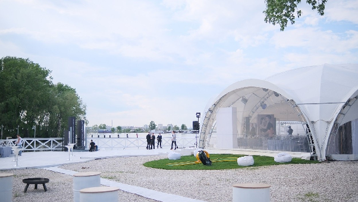
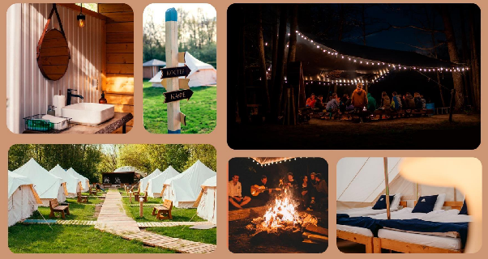
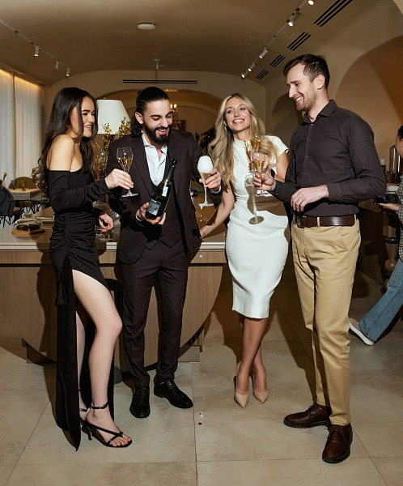
Этот формат подходит, когда важно провести корпоратив аккуратно по бюджету и без сложной организации. Логика простая: дать команде комфортное пространство для общения, отдыха и мягкого переключения после рабочих задач.
В бюджетном варианте мы сознательно убираем тяжелый продакшен и обязательные активности. За счет этого снижается нагрузка на организацию, меньше точек риска и быстрее согласование. Это хороший выбор, если задача — закрыть базовую потребность в командном событии с понятной экономикой.
Бюджет: до 2 700 000 ₽ · минимальные операционные риски, быстрый запуск.
| Статья | Диапазон | Комментарий |
|---|---|---|
| Локация (White Place) | 250 000 ₽ | Базовая аренда площадки под формат 200 человек. |
| Кейтеринг (Шаба) | 1 200 000-1 500 000 ₽ | Закуски + сервис, без расширенного ресторанного сценария. |
| Алкоголь | 300 000-400 000 ₽ | Умеренный набор по базовому формату. |
| Кальяны | 200 000-350 000 ₽ | Ограниченное количество станций. |
| DJ | 50 000-100 000 ₽ | Фоновая музыка без сложного техпродакшена. |
| Активности и продакшен | минимум | Не закладываем дорогой сценарный блок, сцену и шоу-программу. |
Логика расчета: сокращаем дорогие элементы (сложные активности и продакшен), оставляем базовые сервисы. За счет этого итог укладывается в лимит до 2,7 млн ₽.
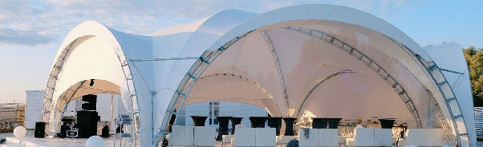
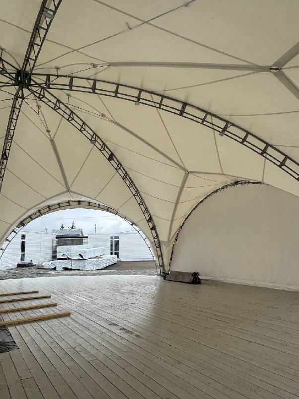
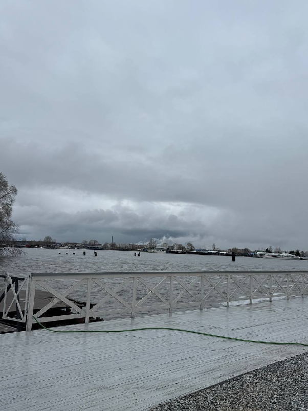
Фото из файла «Летник (бюджетный)»
Средний формат — это управляемый сценарий, где есть понятный каркас мероприятия, но при этом сохраняется свобода для участников. Команда получает и совместную активность, и время на неформальное общение.
Этот вариант обычно самый устойчивый с точки зрения эффекта: выше вовлеченность, чем в базовом формате, но без резкого роста стоимости и организационной сложности, как в премиуме. Для большинства задач по внутренней культуре это практичный и рабочий компромисс.
Бюджет: до 3 500 000 ₽ · с резервом: ориентир 2 800 000-3 900 000 ₽.
| Статья | Диапазон | Комментарий |
|---|---|---|
| Локация | ~250 000 ₽ | Площадка под загородный формат на 200 человек. |
| Кейтеринг (Шаб / Дикий) | ~1 500 000-1 800 000 ₽ | Закуски + горячее, расширенный по сравнению с бюджетным форматом. |
| Алкоголь | ~300 000-400 000 ₽ | Базовый алкогольный сценарий для вечерней части. |
| Кальяны | ~200 000-350 000 ₽ | Выделенные зоны отдыха и общения. |
| Ведущий | ~70 000-120 000 ₽ | Короткий управляющий каркас и координация активностей. |
| DJ | ~50 000-100 000 ₽ | Фоновая и вечерняя музыкальная поддержка. |
| Квест (своими силами) | минимальные затраты | Внутренняя разработка механики без дорогого внешнего продакшена. |
Логика расчета: добавляем управляемое вовлечение (ведущий + квест), но держим цену в балансе за счет контроля продакшена.
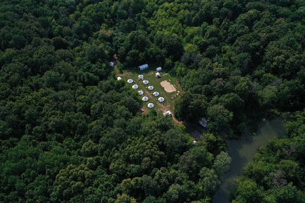
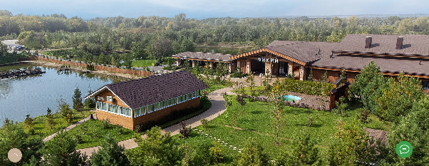
Фото из файла «Летник (средний)»
Премиум формат выбирают, когда нужен не просто корпоратив, а сильное внутреннее событие уровня бренда работодателя. Здесь выше требования к сервису, сценарию и общей атмосфере, поэтому опыт сотрудников ощущается более цельным и ярким.
В этом варианте больше продуманности в деталях: управление потоками гостей, ведущий, премиальная подача питания, усиленный визуальный и эмоциональный эффект. Это самый ресурсный сценарий, но и самый заметный по итоговому впечатлению.
Бюджет: до 6 600 000 ₽ · с резервом: ориентир 5 300 000-7 600 000 ₽.
| Статья | Диапазон | Комментарий |
|---|---|---|
| Аренда (депозит, входит в еду) | 500 000 ₽ | Локация с более высоким уровнем сервиса и требований. |
| Кейтеринг (ресторан) | 1 400 000 ₽ | Премиальный формат подачи и качество кухни. |
| Доп. еда / сервис | 100 000 ₽ | Поддержка сервисного уровня в течение всего события. |
| Алкоголь | 400 000 ₽ | Расширенный барный сценарий. |
| Пробковый сбор | ~3 000 000 ₽ | Ключевая статья, заметно влияющая на итоговую стоимость. |
| Снеки | 40 000 ₽ | Дополнительное питание в течение вечера. |
Логика расчета: премиум-уровень формируется за счет ресторана, сервиса и высокой стоимости площадочных условий (включая пробковый сбор).
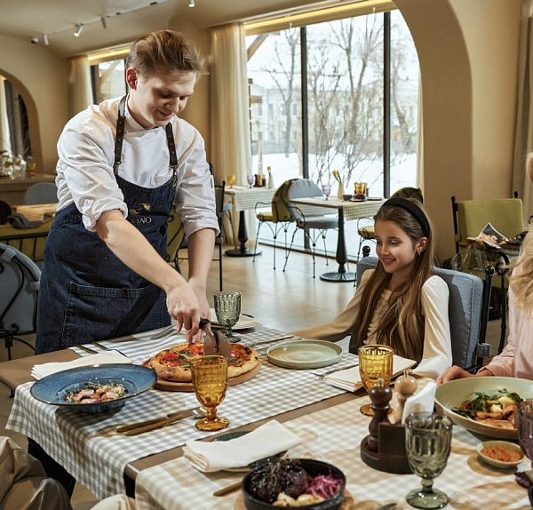
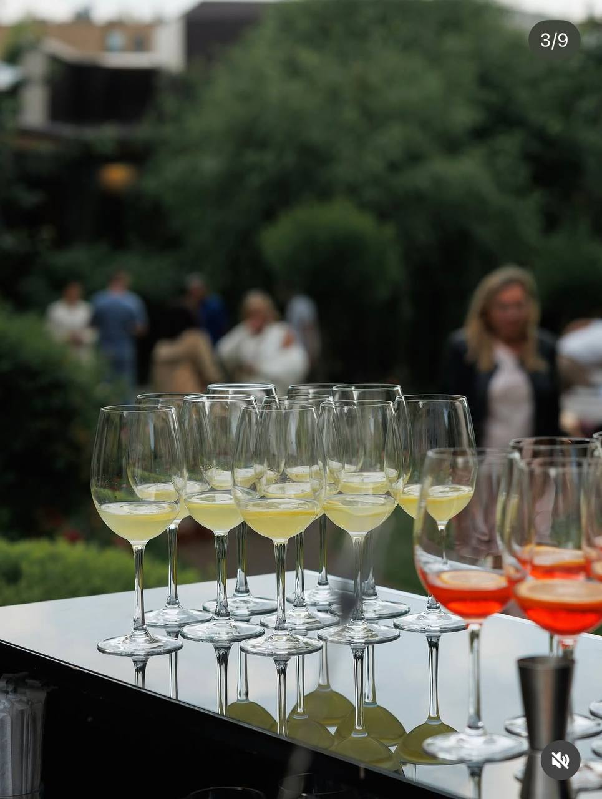
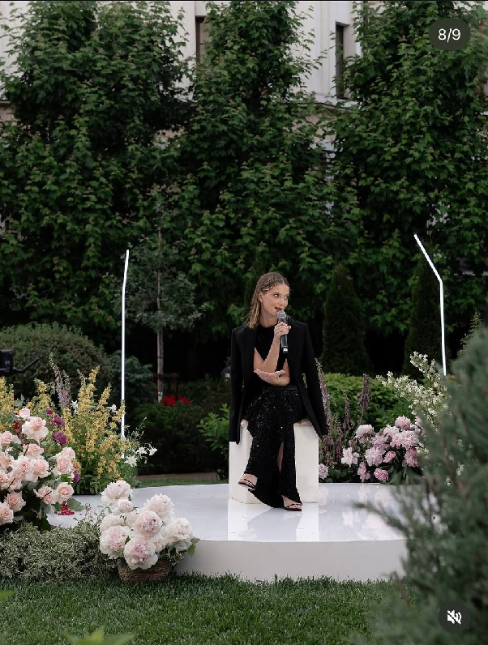
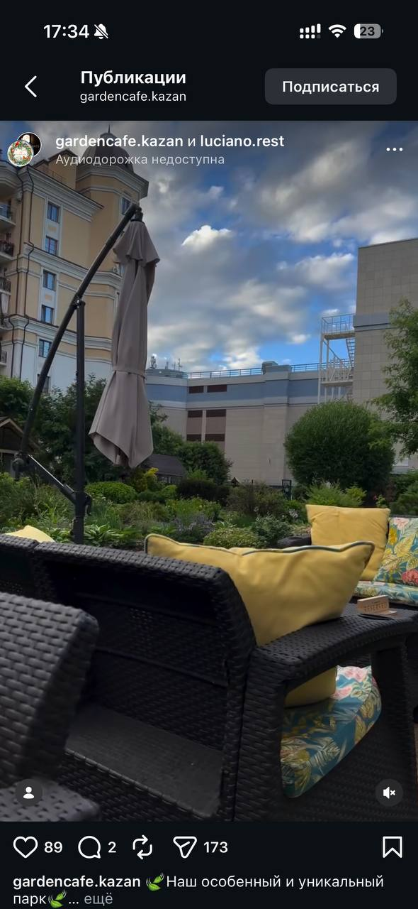
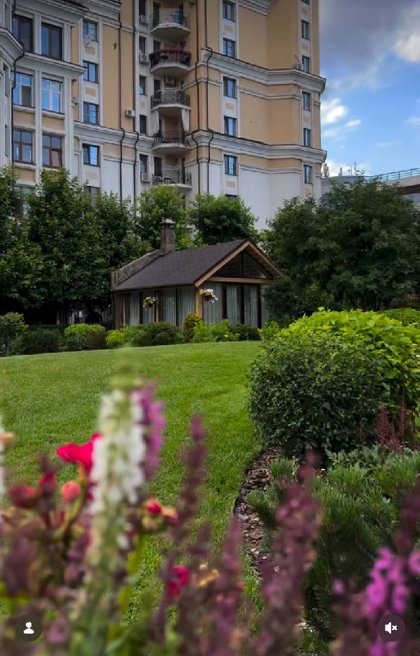
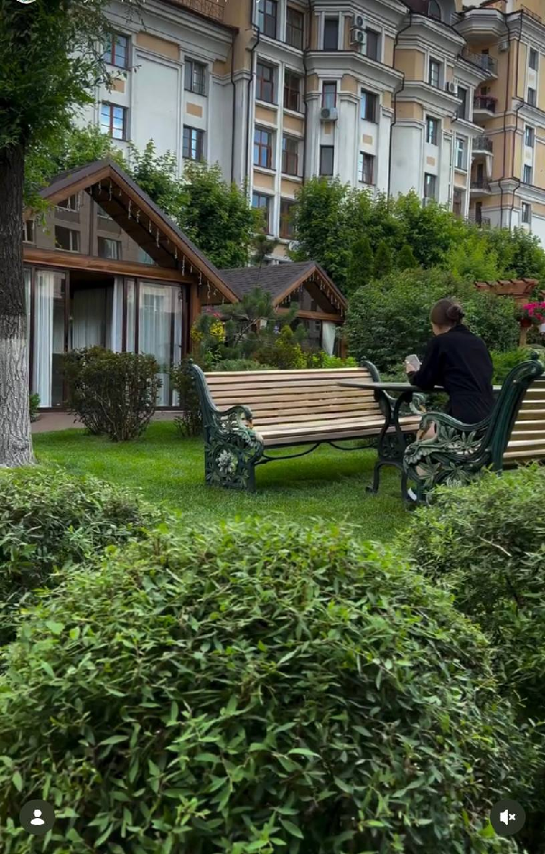
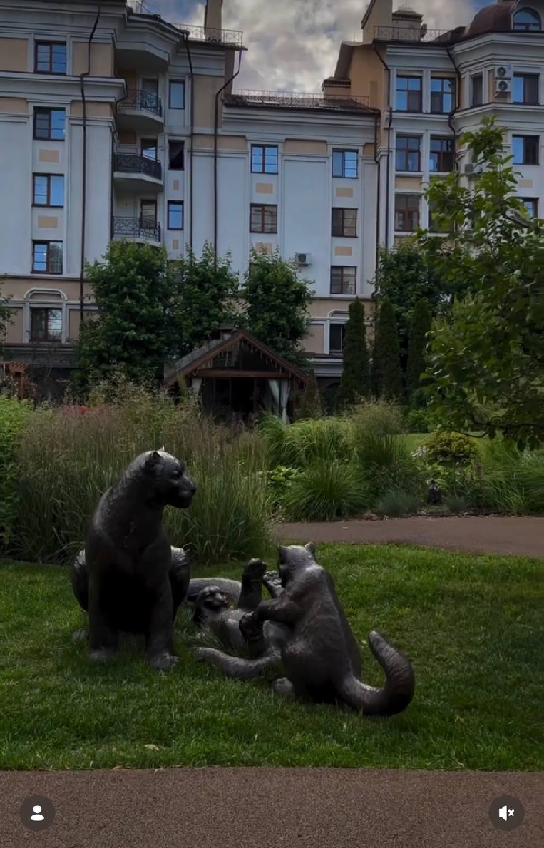
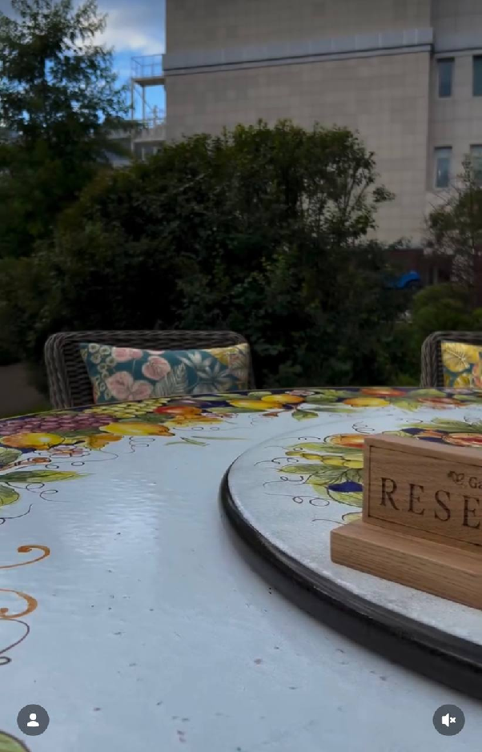
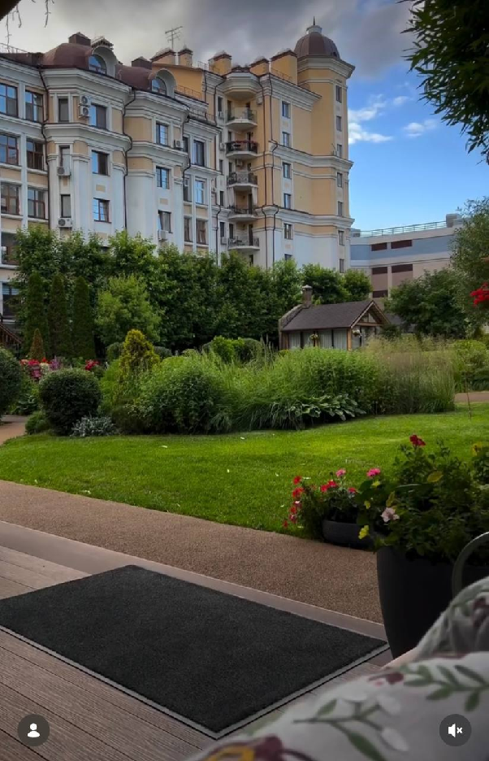
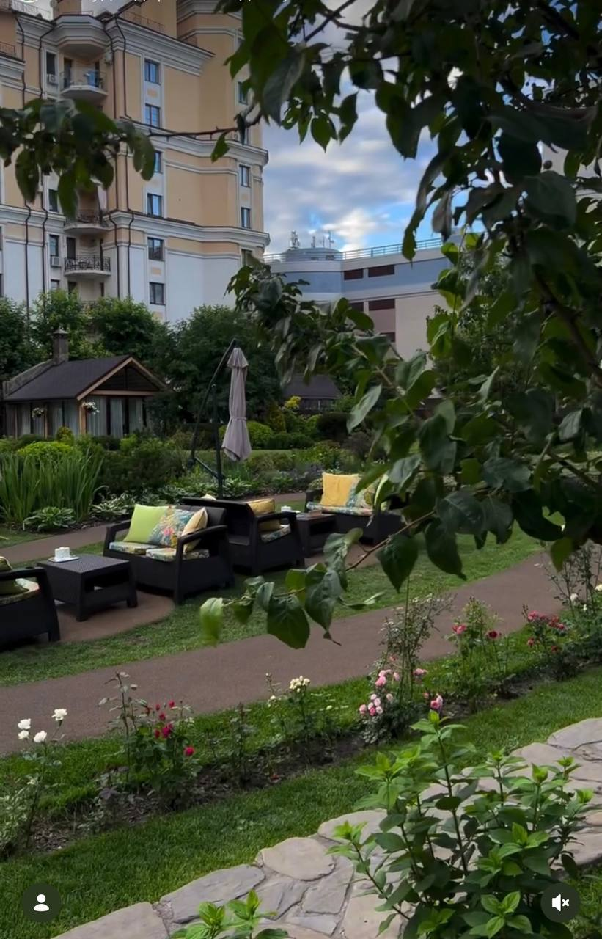
Фото из файла «Летник (премиум)»
| Критерий | Бюджетный | Средний | Премиум |
|---|---|---|---|
| Формат | Легкий, короткий, без перегруза | Управляемое вовлечение + свобода | Сценарный поток + высокий сервис |
| Ключевые элементы | Кейтеринг, алкоголь, кальяны, DJ | Квест, активности, ведущий, DJ | Ведущий, станции, премиум-подача, DJ |
| Сложность организации | Низкая | Средняя | Высокая |
| Бюджетный коридор | до 2 700 000 ₽ | до 3 500 000 ₽ (+резерв) | до 6 600 000 ₽ (+резерв) |
Берем бюджетный формат: закрываем базовую потребность в общем событии.
Берем средний формат: выше вовлеченность без резкого роста бюджета.
Берем премиум формат: сильный имиджевый результат и максимальный уровень опыта.